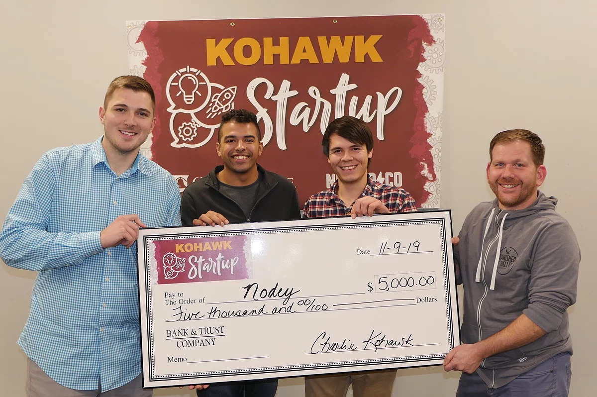

Kohawk Startup is a 24-hour Entrenuership & Innovation event I participated in held at Coe College. The goal of this event was to form teams and pitch startup business ideas. I formed a team with two other Physics majors and we created Nodey. The purpose of Nodey is to give farmers some real-time data/feedback about the current state of their crops. Our product is a sensor embedded in the soil beneath seed level that records data, like the soil compaction and moisture level, then is able to relay that information to the farmer. We actually built a working prototype and were able to show our test results in our presentation. Our team was awarded the first-place prize of $5,000 and we have continued to work towards turning our prototype into a real product. Here is a link to an article about the event.
